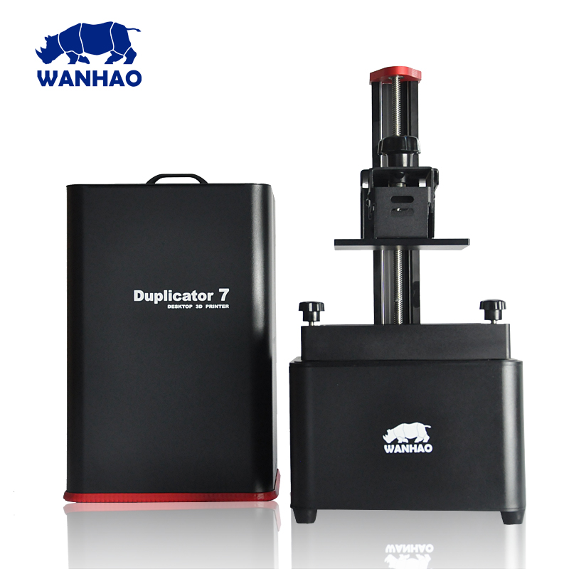
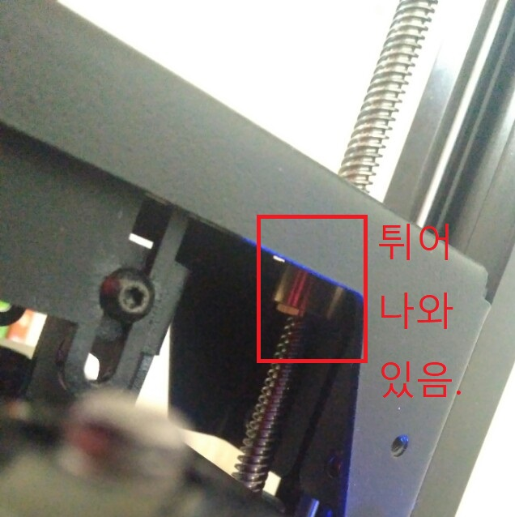

Wanhao D7
- 
- 구매처 알리익스프레스 구매주소 직구비용 $399+약 $80의 EMS비용(D7과 250ml 샘플 완하오레진 제공), 혹은 국내 유저 대행(자세한건 오픈채팅)
- 스크류쪽에서 탁탁탁 소리가 날떄 배드를 스크류를 따라 올라가게 해주는 금색 파츠가 문제 있는 것이다. 배드를 최상단까지 올리고 D7의 전원을 꺼준뒤 수동으로 모터를 더 올린다 그러면 배드장치를 천천히 들어올린뒤 육각파츠를 최대한 금색원통파츠안에 넣어준다. 
NanoDLP
- 로컬에서 nanoDLP 쉽게 찾는 주소 https://www.nanodlp.com/dashboard
- 안티에일리어싱 비활성화 하기, Setup > Tools > Upgrade nanoDLP > Upgrade to the beta version > 메인화면에서 연결문제후 잠시 기다리면 새로고침해도 nanoDLP가 다운된 상태가 된다. D7 라즈베리 둘다 전원을 다시 인가, 인가할떄 순서는 D7, 라즈베리 순으로.. 그렇게 됬다면 레진프로필을 아무거나 수정을 해보면 Slicer Options이 생겼다. Anti-aliasing을 Disable해주고 프로필을 저장하면 비활성화 성공, 이전 프로필 설정으로 슬라이스된 플레이트가 있다면 프레이트메뉴에서 Recreate해줘야 될거 같다. http://cafe.naver.com/d7userforum/140